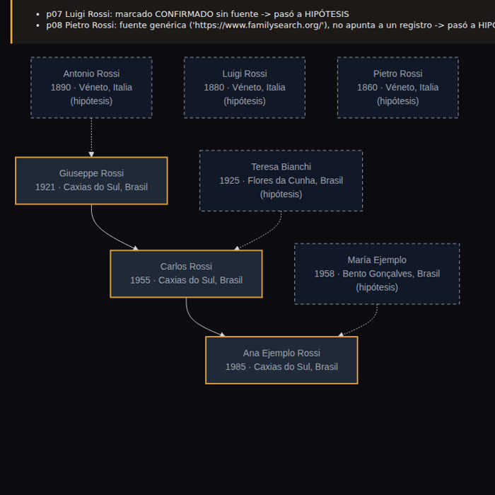

El video viral promete un árbol completo, parientes desconocidos e incluso ciudadanía. Una parte funciona. En la otra es donde la IA alucina.
Esta es una guía gratuita para armar el árbol genealógico de tu familia usando un chat de IA (ChatGPT, Claude, Gemini) de la manera correcta. Explica qué acierta y en qué inventa personas el video viral "ChatGPT encuentra a tus parientes". Incluye 8 prompts listos para usar que obligan a la IA a mostrar las pruebas, una lista de archivos donde buscar de verdad y una lista de verificación para comprobar cada nombre. Para usarla, solo necesitas un chat de IA y, si quieres dibujar el árbol, Python 3.
Cuatro pedidos al chat y una promesa de ciudadanía. Mira qué se sostiene y por qué.
| Promesa | ¿Funciona? | Por qué |
|---|---|---|
| 1. "Pregúntame todo y arma mi árbol inicial" | ✅ Sí | La IA solo organiza lo que tú contaste. No hay nada que inventar. |
| 2. "Cuenta la historia de mi linaje a partir del apellido" | ⚠️ Media verdad | El origen del apellido es genérico. Compartir apellido no significa pertenecer a la misma familia. |
| 3. "Investiga registros y encuentra parientes que no tengo" | ❌ Inventa | Las buenas bases de datos requieren iniciar sesión o son de pago, y muchos registros (en Brasil y en América Latina) no están indexados en internet. Con nombres comunes, la IA mezcla homónimos (personas diferentes con el mismo nombre) y rellena los huecos con personas plausibles. "Nombres que nunca has oído" es justamente el peligro. |
| 4. "Arma el árbol visual completo" | ✅ Dibuja | Pero el dibujo no hace que los nombres del paso 3 sean verdaderos. |
| + "Vas a encontrar una ciudadanía" | ❌ Exageración | La ciudadanía se demuestra con certificados. Y las reglas se endurecieron: Italia limitó la ciudadanía por descendencia en 2025 (Ley 74/2025), y Portugal cambió la ley de nacionalidad en 2025–2026, con partes cuestionadas ante el Tribunal Constitucional. Información verificada en noviembre de 2026: confirma en el consulado. |
Un modelo de lenguaje escribe el texto más probable, no el más verdadero. Sin encontrar el registro, la respuesta «probable» es una lista de nombres que parecen reales.
Organizar lo que sabes, leer caligrafía antigua, traducir registros en latín e italiano, sugerir dónde buscar y armar la lista de documentos.
Solo la prueba de ADN genealógico encuentra primos que no conoces sin partir de un documento. La IA no hace eso.
Empieza por las personas vivas, sigue con los documentos y solo agrega a alguien al árbol cuando tengas pruebas.
Nada de pago es obligatorio.
ChatGPT, Claude o Gemini. Para el paso 5, activa la búsqueda web del chat (el botón de búsqueda o el modo agente, si tu plan lo incluye). Para leer documentos, envía la foto con el ícono de adjuntar.
Gratis, con registro, en familysearch.org. Es el mayor archivo gratuito de registros, incluidos los de Brasil.
Solo para el paso 8. En Linux ya viene instalado; en Windows y Mac, instálalo desde python.org (en Windows, marca Add python.exe to PATH en la primera pantalla del instalador). Descarga el proyecto con el botón verde Code → Download ZIP en GitHub y descomprímelo, o usa git:
git clone https://github.com/inematds/arvore-genealogica-ia cd arvore-genealogica-ia
Los prompts también están en la carpeta prompts/ del repositorio. Todos siguen la misma regla: sin pruebas, no se incluye.
Los archivos de las carpetas prompts/ y docs/ están en portugués; todos los prompts y listas están traducidos en esta página.
Empieza por las personas vivas. La IA hace las preguntas y prepara la guía para que converses con el pariente de más edad.
Todo se convierte en una tabla con la columna fuente y la columna estado. Es esa la que el script dibuja en el paso 8.
CSV es una tabla de texto, con las columnas separadas por comas. Para guardarla: copia la respuesta, pégala en el Bloc de notas (Windows) o en TextEdit en modo de texto sin formato (Mac) y guárdala como mi-familia.csv dentro de la carpeta del proyecto. O pégalo en Google Sheets y descárgalo como .csv. En el Bloc de notas, en "Tipo", elige "Todos los archivos" (si no, queda .csv.txt), y no copies las líneas con ``` si el chat las agrega (el script también las ignora). El script acepta coma o punto y coma, y el estado con o sin tilde (HIPÓTESIS o HIPOTESIS).
Aquí la IA es excelente: caligrafía difícil, latín, italiano, alemán. Lo verificas con la imagen.
La IA sugiere archivos y registros civiles. Abre cada enlace antes de confiar.
La versión segura de "encuentra parientes que no tengo". Úsala en un chat que navegue por la web: en la app de ChatGPT, toca el + junto al cuadro de texto y elige la búsqueda web (o el modo agente, si tu plan lo incluye). Los nombres de los botones cambian con las versiones de la app.
¿Ya tienes una lista de personas que la IA "encontró"? Abre un chat nuevo (sin el historial) y pide la auditoría.
La IA organiza el camino; quienes deciden son la ley y el consulado. Pide la fecha de la información. Los términos del prompt (copia íntegra, apostilla de La Haya, traducción jurada) están en el glosario.
Abre la terminal dentro de la carpeta del proyecto: en Windows, abre la carpeta en el Explorador de archivos, haz clic en la barra de direcciones, escribe powershell y pulsa Enter; en Mac, clic derecho en la carpeta → Servicios → Nuevo Terminal en la carpeta; en Linux, clic derecho → Abrir en la terminal. Después ejecuta el script con la tabla del paso 2. También verifica que quien esté CONFIRMADO sin fuente (o solo con la dirección del sitio) pase a ser una hipótesis, y avisa cuando la edad del padre o la madre es imposible. El script lee las columnas en español del paso 2 y responde en español.
# Mac y Linux python3 scripts/arvore.py mi-familia.csv --salida mi-arbol.html # guarda mi-arbol.html python3 scripts/arvore.py mi-familia.csv --solo-confirmados --salida solo-pruebas.html python3 scripts/arvore.py modelos/personas.csv --salida ejemplo.html # familia ficticia de ejemplo # Windows (PowerShell) py scripts\arvore.py mi-familia.csv --salida mi-arbol.html py scripts\arvore.py mi-familia.csv --solo-confirmados --salida solo-pruebas.html py scripts\arvore.py modelos\personas.csv --salida ejemplo.html
El script solo guarda el archivo: haz doble clic en mi-arbol.html en la carpeta para abrirlo en el navegador (necesita internet para dibujar). ¿No tienes computadora? Pídele al chat: "dibuja esta tabla en Mermaid, HIPÓTESIS con borde discontinuo, sin agregar a nadie" y pega el resultado en mermaid.live para ver el dibujo. Para llevar el árbol a un sitio de genealogía, el formato estándar es GEDCOM (.ged): arma el árbol directamente en FamilySearch o MyHeritage, o pide al chat que convierta la tabla a GEDCOM e impórtala en el sitio.
Empieza en casa: certificados, libretas de trabajo, pasaportes, cartas y fotos con anotaciones al dorso. Después, consulta estos archivos.
| Dónde | Qué tiene | Costo |
|---|---|---|
| FamilySearch (familysearch.org) | Registros civiles y parroquiales de varios estados de Brasil y del mundo. Muchos solo están disponibles como imágenes, sin búsqueda por nombre: hay que pasar las páginas. | Gratis |
| Registro civil | La copia íntegra (copia fiel del libro) es la que sirve para la ciudadanía. Solicítala en el registro civil o por internet. | De pago |
| Parroquias y curias | Bautismos, matrimonios y defunciones de antes de que se generalizara el registro civil. | Varía |
| Archivos públicos y Archivo Nacional | Inmigración, naturalización, inventarios. El Archivo Nacional conserva listas de pasajeros de barcos que llegaron a Río. | Gratis |
| Museu da Imigração (SP) | Registros de la Hospedaria de Imigrantes y listas de pasajeros. | Gratis |
| CEMLA (Argentina) | Centro de Estudios Migratorios Latinoamericanos: base de llegadas de inmigrantes al puerto de Buenos Aires. | Varía |
| Archivo General de la Nación y registros civiles (Argentina y otros países) | En cada país, el registro civil (de la provincia o del municipio) y el archivo nacional guardan nacimientos, matrimonios, defunciones e inmigración. Pide al chat la lista de tu país con el prompt 4 y abre cada enlace. | Varía |
| Hemeroteca Digital (Biblioteca Nacional de Brasil) | Periódicos antiguos: matrimonios, fallecimientos, llegada de barcos. | Gratis |
| Portal Antenati (Italia) | Registros civiles de los archivos estatales italianos. | Gratis |
| Digitarq (Portugal) | Registros parroquiales digitalizados de los archivos distritales. | Gratis |
| Matricula (Alemania, Austria, Polonia) | Libros parroquiales católicos. | Gratis |
| Szukaj w Archiwach y Geneteka (Polonia) | Archivos estatales polacos digitalizados e índice de registros parroquiales y civiles hecho por voluntarios. | Gratis |
| Prueba de ADN (MyHeritage, Ancestry y otros) | Compara tu ADN con el de otras personas que se hicieron pruebas e identifica primos reales. Cada empresa compara con su propia base; algunos sitios aceptan el archivo de ADN de otra empresa (carga), lo que amplía la búsqueda. El ADN es un dato sensible: lee la política de privacidad. | De pago |
Pasa a cada persona nueva por esta lista. Si no cumple todos los puntos, queda como HIPÓTESIS.
□ ¿Tiene una fuente (enlace al registro o documento)?
□ ¿Abrí el enlace yo mismo y muestra a esa persona?
□ ¿Coinciden el nombre, la fecha y el lugar (incluida la grafía antigua)?
□ ¿La edad de los padres tiene sentido?
□ ¿El registro menciona a padres o cónyuge ya confirmados? Este es el vínculo que distingue a un pariente de un homónimo.
□ ¿Hay dos documentos para el vínculo que lleva a la ciudadanía?
Enlace que no abre o muestra a otra persona · "según registros públicos" sin decir cuáles · fechas demasiado redondas · personas que encajan perfectamente con lo que contaste · la fuente cambia cuando vuelves a preguntar.

scripts/arvore.py con la familia ficticia de ejemplo: confirmados con borde ámbar, hipótesis con líneas discontinuas. «Luigi» se marcó como confirmado sin fuente y el script lo rebajó.Para que nadie se quede trabado a mitad de camino.
Cuando la IA inventa algo que parece real: un nombre, una fecha, un registro que no existe.
Una persona distinta con el mismo nombre. El mayor riesgo de la genealogía: encontrar al "José Rossi" equivocado.
Registro que puedes encontrar escribiendo el nombre. Si no está indexado, solo aparece la foto del libro: hay que pasar las páginas una por una.
Bautismo, matrimonio o defunción anotados en el libro de la iglesia. Antes del registro civil, era el registro principal.
Certificado que copia el registro completo del libro del registro civil, con padres, abuelos y anotaciones. Es el que sirve para la ciudadanía.
Certificado que pone una oficina autorizada (en Brasil, una notaría; en otros países, la cancillería u otro organismo) para que un documento de un país tenga validez en otro.
Traducción oficial, realizada por un traductor público registrado, exigida en los procesos de ciudadanía.
Tabla guardada como texto, con columnas separadas por comas. Se abre en Excel y Google Sheets.
Mermaid es un lenguaje que convierte texto en diagramas. GEDCOM (.ged) es el archivo estándar que permite llevar un árbol de un sitio de genealogía a otro.
La genealogía de verdad avanza despacio. Eso es bueno: cada nombre que agregas se queda.